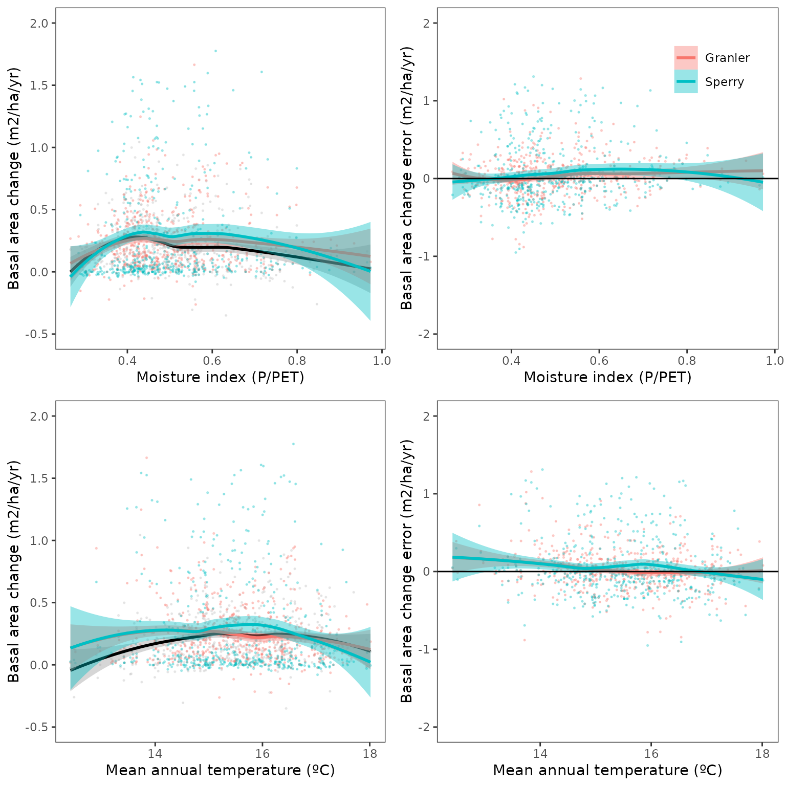

Evaluation of regional-level forest dynamics with forest inventory data
Miquel De Cáceres
2022-04-20
Source:vignettes/evaluation/RegionalLevelEvaluation.Rmd
RegionalLevelEvaluation.RmdIntroduction
Goal
The aim of this article is to provide an assessment of the performance of fordyn for the prediction of forest dynamics in Catalonia (NE of Spain). To this aim, we simulate forest dynamics between two surveys of the Spanish National Forest Inventory and compare the model predictions of forest growth against inventory data for a large set of permanent plots. The evaluation focuses first on the growth (in diameter and height) of surviving trees, then turning the attention to the basal area of dead trees and overall changes in basal area.
This evaluation was conducted using medfate package version 2.7.2.
Simulation procedure
We selected 3150 repeated plots (A1 between IFN3 and IFN4) without signs of management (cut trees) and whose basal area did not decrease between inventory surveys.
Soil physical properties were drawn from SoilGrids (Hengl 2016), complemented by rock fragment content estimates derived from surface stoniness measurements in forest plots. Simulations were conducted between 2000/2001 (IFN3) and 2014/2016 (IFN4) depending on the sampling years of the target plot, with daily weather data obtained via interpolation on plot’s coordinates using package meteoland.
Default species-specific parameters were modified using the results of the meta-modelling exercise and the growth calibration exercise. These two exercises do not provide values for all the main species included here, so it is expected that evaluation results are worse for those species not included in those exercises.
The key parameters values used in simulations were the following:
| Name | Tmax_LAI | Tmax_LAIsq | WUE | Al2As | SLA | RGRcambiummax | fHDmin | fHDmax | MortalityBaselineRate |
|---|---|---|---|---|---|---|---|---|---|
| Abies alba | 0.0966599 | -0.0043281 | 10.848377 | 7194.245 | 7.768174 | 0.0080000 | 40 | 111 | 0.0004 |
| Abies pinsapo | NA | NA | NA | 6790.546 | 3.420603 | 0.0054114 | 37 | 100 | NA |
| Acacia spp. | NA | NA | NA | 5238.444 | 6.701288 | NA | 60 | 160 | NA |
| Acer campestre | NA | NA | NA | 9056.403 | 14.118911 | 0.0015799 | 50 | 150 | NA |
| Acer monspessulanum | NA | NA | NA | 3404.914 | 12.955898 | 0.0010463 | 50 | 120 | NA |
| Acer negundo | NA | NA | NA | 10619.758 | 24.799802 | 0.0034211 | 69 | 133 | NA |
| Acer opalus | NA | NA | NA | 9056.403 | 21.634942 | 0.0017065 | 60 | 140 | NA |
| Acer platanoides | NA | NA | NA | 9056.403 | 19.805517 | 0.0019751 | 79 | 127 | NA |
| Acer pseudoplatanus | NA | NA | NA | 9056.403 | 15.961542 | 0.0020162 | 64 | 170 | NA |
| Ailanthus altissima | NA | NA | NA | NA | 31.165320 | NA | 58 | 135 | NA |
| Alnus glutinosa | NA | NA | NA | 5541.256 | 16.349875 | 0.0020665 | 50 | 170 | NA |
| Amelanchier ovalis | NA | NA | NA | 2447.228 | 11.334074 | NA | 60 | 100 | NA |
| Apollonias barbujana | NA | NA | NA | NA | 7.067983 | NA | 60 | 146 | NA |
| Arbutus canariensis | NA | NA | NA | 5129.541 | 6.970642 | NA | 61 | 118 | NA |
| Arbutus unedo | NA | NA | NA | 5129.541 | 8.073095 | 0.0008000 | 40 | 110 | 0.0025 |
| Betula spp. | NA | NA | NA | 4771.425 | 22.993993 | 0.0030000 | 60 | 180 | 0.0025 |
| Buxus sempervirens | NA | NA | NA | NA | 8.458495 | 0.0008054 | 40 | 100 | NA |
| Carpinus betulus | NA | NA | NA | NA | 15.570664 | NA | 44 | 90 | NA |
| Castanea sativa | NA | NA | NA | NA | 13.862317 | 0.0040000 | 50 | 160 | NA |
| Cedrus spp. | NA | NA | NA | NA | 8.047390 | 0.0041074 | 48 | 108 | NA |
| Celtis australis | NA | NA | NA | 7735.297 | 23.868556 | 0.0026363 | 52 | 120 | NA |
| Ceratonia siliqua | NA | NA | NA | NA | 4.949812 | 0.0011468 | 40 | 100 | NA |
| Chamaecyparis lawsoniana | NA | NA | NA | NA | 6.665472 | NA | 40 | 136 | NA |
| Chamaerops humilis | NA | NA | NA | NA | 5.522500 | NA | 100 | 100 | NA |
| Cornus sanguinea | NA | NA | NA | 7478.584 | 18.027236 | NA | 60 | 120 | NA |
| Corylus avellana | NA | NA | NA | 8781.000 | 17.653947 | 0.0007453 | 60 | 140 | NA |
| Crataegus spp. | NA | NA | NA | NA | 12.337986 | 0.0007441 | 50 | 120 | NA |
| Cupressus spp. | NA | NA | NA | NA | 5.824112 | 0.0019060 | 40 | 145 | NA |
| Dracaena drago | NA | NA | NA | NA | 22.320000 | NA | 54 | 129 | NA |
| Erica arborea | NA | NA | NA | 2044.990 | 8.117985 | NA | 50 | 140 | NA |
| Erica scoparia | NA | NA | NA | 2044.990 | 7.035931 | NA | 60 | 100 | NA |
| Eucalyptus spp. | NA | NA | NA | 4548.028 | 9.409216 | 0.0044603 | 70 | 202 | NA |
| Euonymus europaeus | NA | NA | NA | NA | 16.186048 | NA | 50 | 100 | NA |
| Fagus sylvatica | 0.1647442 | -0.0073766 | 6.684038 | 2076.120 | 18.320000 | 0.0028705 | 50 | 160 | 0.0016 |
| Ficus carica | NA | NA | NA | 11028.841 | 12.677852 | 0.0010410 | 41 | 110 | NA |
| Frangula alnus | NA | NA | NA | 6422.000 | 22.428883 | NA | 57 | 120 | NA |
| Fraxinus spp. | NA | NA | NA | NA | 23.910436 | 0.0028668 | 60 | 160 | NA |
| Gleditsia triacanthos | NA | NA | NA | NA | NA | NA | 100 | 100 | NA |
| Heberdenia bahamensis | NA | NA | NA | NA | 8.840102 | NA | 60 | 173 | NA |
| Ilex spp. | NA | NA | NA | 4886.362 | 10.511715 | 0.0009229 | 50 | 140 | NA |
| Juglans spp. | NA | NA | NA | 19643.000 | 26.198829 | 0.0026947 | 41 | 140 | NA |
| Juniperus cedrus | NA | NA | NA | 1856.107 | 4.027473 | NA | 54 | 129 | NA |
| Juniperus communis | NA | NA | NA | 2266.839 | 6.794709 | 0.0006798 | 40 | 100 | NA |
| Juniperus oxycedrus | NA | NA | NA | 2983.316 | 5.912578 | 0.0007755 | 40 | 100 | NA |
| Juniperus phoenicea | NA | NA | NA | 1856.107 | 4.984873 | 0.0006703 | 40 | 100 | NA |
| Juniperus thurifera | NA | NA | NA | 1856.107 | 4.027473 | 0.0007739 | 40 | 100 | NA |
| Larix spp. | NA | NA | NA | 3307.012 | 12.437474 | 0.0025003 | 50 | 175 | NA |
| Laurus spp. | NA | NA | NA | NA | 8.163854 | NA | 60 | 150 | NA |
| Lonicera spp. | NA | NA | NA | 4994.585 | 22.390534 | NA | 54 | 129 | NA |
| Malus sylvestris | NA | NA | NA | NA | 13.457260 | 0.0009834 | 50 | 122 | NA |
| Morus spp. | NA | NA | NA | NA | 31.158834 | NA | 43 | 100 | NA |
| Myrica faya | NA | NA | NA | NA | 12.195153 | NA | 50 | 148 | NA |
| Myrtus communis | NA | NA | NA | 2680.965 | 9.260292 | NA | 60 | 100 | NA |
| Ocotea phoetens | NA | NA | NA | 9808.438 | 12.651150 | NA | 66 | 134 | NA |
| Olea europaea | NA | NA | NA | NA | 5.495173 | 0.0005612 | 40 | 100 | NA |
| Persea indica | NA | NA | NA | NA | 9.456614 | NA | 60 | 160 | NA |
| Phillyrea latifolia | NA | NA | NA | 1698.950 | 6.881886 | 0.0008456 | 45 | 109 | NA |
| Phoenix spp. | NA | NA | NA | NA | NA | NA | 47 | 100 | NA |
| Picconia excelsa | NA | NA | NA | NA | 5.727442 | NA | 62 | 124 | NA |
| Picea abies | NA | NA | NA | 1355.932 | 4.496242 | 0.0029891 | 50 | 148 | NA |
| Pinus canariensis | NA | NA | NA | 1608.774 | 7.763084 | NA | 40 | 112 | NA |
| Pinus halepensis | 0.1751014 | -0.0078404 | 6.107080 | 1317.523 | 5.140523 | 0.0024752 | 80 | 160 | 0.0045 |
| Pinus nigra | 0.1703022 | -0.0076255 | 6.103085 | 1272.265 | 4.569508 | 0.0018243 | 80 | 160 | 0.0020 |
| Pinus pinaster | NA | NA | NA | 1013.171 | 2.419246 | 0.0070000 | 40 | 160 | NA |
| Pinus pinea | 0.2262101 | -0.0101288 | 5.527546 | 1615.509 | 4.207291 | 0.0024942 | 80 | 160 | 0.0035 |
| Pinus radiata | NA | NA | NA | 2409.639 | 7.289987 | 0.0086465 | 40 | 170 | NA |
| Pinus sylvestris | 0.1610193 | -0.0072098 | 7.366076 | 1598.180 | 4.897943 | 0.0031864 | 80 | 160 | 0.0040 |
| Pinus uncinata | 0.1801692 | -0.0080673 | 7.084242 | 1608.774 | 3.804390 | 0.0045000 | 80 | 160 | 0.0040 |
| Pistacia atlantica | NA | NA | NA | 4455.589 | 10.268128 | NA | 100 | 100 | NA |
| Pistacia terebinthus | NA | NA | NA | 4455.589 | 10.176447 | 0.0008647 | 40 | 100 | NA |
| Platanus spp. | NA | NA | NA | NA | 18.020216 | 0.0049098 | 50 | 189 | NA |
| Pleiomeris canariensis | NA | NA | NA | NA | NA | NA | 150 | 150 | NA |
| Populus spp. | NA | NA | NA | 5648.704 | 14.216904 | 0.0040829 | 60 | 177 | NA |
| Prunus spp. | NA | NA | NA | 8996.601 | 15.163692 | 0.0025684 | 50 | 120 | NA |
| Pseudotsuga menziesii | NA | NA | NA | 2407.925 | 8.020413 | 0.0047810 | 50 | 148 | NA |
| Pyrus spp. | NA | NA | NA | NA | 10.619331 | 0.0014986 | 49 | 117 | NA |
| Quercus canariensis | NA | NA | NA | 4189.325 | 16.468934 | 0.0018840 | 56 | 135 | NA |
| Quercus faginea | 0.1560824 | -0.0069888 | 5.499381 | 4189.325 | 8.328895 | 0.0012032 | 40 | 120 | 0.0004 |
| Quercus ilex | 0.1123937 | -0.0050326 | 7.564588 | 3908.823 | 6.340000 | 0.0007000 | 40 | 100 | 0.0004 |
| Quercus lusitanica | NA | NA | NA | 4189.325 | 6.762250 | NA | 54 | 129 | NA |
| Quercus petraea | NA | NA | NA | 4189.325 | 19.669137 | 0.0012470 | 50 | 150 | NA |
| Quercus pubescens | 0.1447151 | -0.0064798 | 4.978091 | 6031.582 | 11.800000 | 0.0011649 | 50 | 110 | 0.0006 |
| Quercus pyrenaica | NA | NA | NA | 4189.325 | 6.697064 | 0.0013890 | 40 | 130 | NA |
| Quercus robur | NA | NA | NA | 4189.325 | 10.454901 | 0.0018071 | 50 | 140 | NA |
| Quercus rubra | NA | NA | NA | 4189.325 | 15.683995 | 0.0012513 | 50 | 160 | NA |
| Quercus suber | 0.1322132 | -0.0059200 | 7.012321 | 4189.325 | 8.656130 | 0.0007500 | 40 | 100 | 0.0020 |
| Rhamnus spp. | NA | NA | NA | 941.000 | 13.427982 | 0.0010929 | 50 | 100 | NA |
| Rhus coriaria | NA | NA | NA | 4905.159 | 12.782358 | NA | 46 | 118 | NA |
| Robinia pseudacacia | NA | NA | NA | NA | 27.291276 | 0.0028642 | 60 | 180 | NA |
| Salix spp. | NA | NA | NA | 8556.500 | 13.837752 | 0.0016174 | 60 | 151 | NA |
| Sambucus spp. | NA | NA | NA | 6797.000 | 21.518674 | 0.0027531 | 50 | 120 | NA |
| Sideroxylon mirmulans | NA | NA | NA | NA | 16.135461 | NA | 54 | 129 | NA |
| Sophora japonica | NA | NA | NA | NA | 11.000000 | NA | 54 | 129 | NA |
| Sorbus spp. | NA | NA | NA | 2870.889 | 14.950003 | 0.0019125 | 60 | 150 | NA |
| Tamarix spp. | NA | NA | NA | NA | 9.700682 | NA | 50 | 111 | NA |
| Taxus baccata | NA | NA | NA | NA | 7.756546 | 0.0006250 | 40 | 102 | NA |
| Tetraclinis articulata | NA | NA | NA | 2747.253 | 3.379000 | NA | 100 | 100 | NA |
| Thuja spp. | NA | NA | NA | NA | 6.853059 | NA | 100 | 100 | NA |
| Tilia spp. | NA | NA | NA | NA | 24.458818 | 0.0019386 | 60 | 140 | NA |
| Ulmus spp. | NA | NA | NA | NA | 18.528753 | 0.0011840 | 52 | 155 | NA |
| Visnea mocanera | NA | NA | NA | NA | 7.189073 | NA | 59 | 130 | NA |
In the following sections, we provide the bias, mean absolute error (both in absolute and relative terms) and R-squared of growth and mortality predictions at the tree-level and stand-level. Scatter plots are provided to represent the relationship between predicted and observed values, as well as the factors that may influence the direction and magnitude of prediction error (i.e. initial values, environmental conditions, …). Detailed results of growth evaluation by species are provided in the last section.
Growth of surviving trees
Comparison of growth of trees that survived in both observed and simulated data.
Annual diameter increment (cm/yr)
Overall predictive capacity:| Name | n | Obs | Pred | Bias | Biasrel | RMSQ | RMSQrel | R2 |
|---|---|---|---|---|---|---|---|---|
| All | 50451 | 0.2130824 | 0.2195535 | 0.0064712 | 2.947421 | 0.1862383 | 84.82592 | 0.0603064 |
Predictive capacity plot:

Relationship between diameter increase and climatic variables (MAT, P/PET and available PAR):

Predictive capacity by species (for species with > 100 tree records):
| Name | n | Obs | Pred | Bias | Biasrel | RMSQ | RMSQrel | R2 |
|---|---|---|---|---|---|---|---|---|
| Abies alba | 1277 | 0.3419583 | 0.2203365 | -0.1216218 | -55.1982187 | 0.3040981 | 138.01531 | 0.1327937 |
| Acer campestre | 131 | 0.1583738 | 0.1305616 | -0.0278122 | -21.3019628 | 0.1548131 | 118.57470 | 0.0579404 |
| Acer monspessulanum | 105 | 0.1441992 | 0.1453150 | 0.0011158 | 0.7678619 | 0.1493643 | 102.78658 | 0.0343624 |
| Acer opalus | 156 | 0.1735533 | 0.1717442 | -0.0018091 | -1.0533948 | 0.3190632 | 185.77818 | 0.0107169 |
| Arbutus unedo | 379 | 0.1069803 | 0.1317438 | 0.0247635 | 18.7967133 | 0.1463658 | 111.09885 | 0.0129565 |
| Betula spp. | 459 | 0.1487416 | 0.1596429 | 0.0109013 | 6.8285710 | 0.1759618 | 110.22211 | 0.0188485 |
| Castanea sativa | 207 | 0.2379150 | 0.1471379 | -0.0907771 | -61.6952317 | 0.3161392 | 214.85912 | 0.0000190 |
| Crataegus spp. | 107 | 0.0712732 | 0.0700566 | -0.0012166 | -1.7365954 | 0.0822005 | 117.33448 | 0.0104953 |
| Fagus sylvatica | 1672 | 0.2611917 | 0.2719537 | 0.0107620 | 3.9572883 | 0.2238616 | 82.31606 | 0.0503739 |
| Fraxinus spp. | 283 | 0.2794319 | 0.2849832 | 0.0055512 | 1.9479136 | 0.2817799 | 98.87597 | 0.0307734 |
| Pinus halepensis | 6679 | 0.2842242 | 0.2773672 | -0.0068570 | -2.4721787 | 0.1913917 | 69.00301 | 0.0355280 |
| Pinus nigra | 5316 | 0.2057280 | 0.2218985 | 0.0161704 | 7.2873143 | 0.1546570 | 69.69720 | 0.0081947 |
| Pinus pinaster | 411 | 0.3726032 | 0.3000101 | -0.0725931 | -24.1968768 | 0.4332694 | 144.41827 | 0.0027751 |
| Pinus pinea | 1260 | 0.2956115 | 0.2924915 | -0.0031200 | -1.0666951 | 0.1931856 | 66.04827 | 0.0050042 |
| Pinus sylvestris | 10775 | 0.2305052 | 0.2611957 | 0.0306906 | 11.7500351 | 0.1737837 | 66.53389 | 0.0043427 |
| Pinus uncinata | 4419 | 0.1919000 | 0.1995260 | 0.0076260 | 3.8220513 | 0.1652022 | 82.79731 | 0.0025225 |
| Populus spp. | 175 | 0.4933050 | 0.1407929 | -0.3525121 | -250.3763603 | 0.6153672 | 437.07260 | 0.0144797 |
| Quercus faginea | 764 | 0.1657130 | 0.1759357 | 0.0102228 | 5.8105072 | 0.1299538 | 73.86436 | 0.0225920 |
| Quercus ilex | 8536 | 0.1357367 | 0.1647140 | 0.0289773 | 17.5924979 | 0.1424374 | 86.47559 | 0.0350160 |
| Quercus petraea | 1316 | 0.1735538 | 0.1699088 | -0.0036450 | -2.1452924 | 0.1564686 | 92.08977 | 0.0161524 |
| Quercus pubescens | 2800 | 0.1718456 | 0.1650905 | -0.0067551 | -4.0917560 | 0.1465398 | 88.76332 | 0.0370561 |
| Quercus suber | 2248 | 0.1665360 | 0.1816044 | 0.0150684 | 8.2973943 | 0.1769615 | 97.44342 | 0.0264422 |
| Sorbus spp. | 100 | 0.1643981 | 0.1179805 | -0.0464175 | -39.3433608 | 0.1738936 | 147.39177 | 0.0005520 |
| Tilia spp. | 120 | 0.2618046 | 0.1142992 | -0.1475054 | -129.0519823 | 0.2532157 | 221.53758 | 0.0775248 |
Annual height increment (cm/yr)
Overall predictive capacity:| Name | n | Obs | Pred | Bias | Biasrel | RMSQ | RMSQrel | R2 |
|---|---|---|---|---|---|---|---|---|
| All | 50451 | 9.676766 | 9.797013 | 0.1202472 | 1.227386 | 13.86861 | 141.5596 | 0.0391143 |
Predictive capacity by species (for species with > 100 tree records):
| Name | n | Obs | Pred | Bias | Biasrel | RMSQ | RMSQrel | R2 |
|---|---|---|---|---|---|---|---|---|
| Abies alba | 1277 | 17.610979 | 8.365178 | -9.2458003 | -110.527235 | 23.171611 | 277.00080 | 0.0958716 |
| Acer campestre | 131 | 8.369586 | 4.999991 | -3.3695949 | -67.392019 | 15.066372 | 301.32798 | 0.0377745 |
| Acer monspessulanum | 105 | 6.041828 | 4.154088 | -1.8877406 | -45.442965 | 10.328863 | 248.64335 | 0.0006429 |
| Acer opalus | 156 | 8.263055 | 7.536481 | -0.7265739 | -9.640757 | 15.529820 | 206.06194 | 0.0183583 |
| Arbutus unedo | 379 | 1.445712 | 3.666321 | 2.2206089 | 60.567770 | 9.017974 | 245.96794 | 0.0115775 |
| Betula spp. | 459 | 9.169583 | 8.510868 | -0.6587154 | -7.739697 | 17.599161 | 206.78456 | 0.0012415 |
| Castanea sativa | 207 | 7.633153 | 6.315827 | -1.3173268 | -20.857552 | 17.623398 | 279.03549 | 0.0194509 |
| Crataegus spp. | 107 | 5.674404 | 1.601129 | -4.0732742 | -254.400079 | 9.073469 | 566.69186 | 0.0165003 |
| Fagus sylvatica | 1672 | 14.750573 | 11.497731 | -3.2528424 | -28.291169 | 20.221580 | 175.87453 | 0.0013369 |
| Fraxinus spp. | 283 | 14.856243 | 12.980686 | -1.8755569 | -14.448827 | 23.500668 | 181.04334 | 0.0296486 |
| Pinus halepensis | 6679 | 11.649445 | 11.834654 | 0.1852096 | 1.564976 | 12.767500 | 107.88232 | 0.0023298 |
| Pinus nigra | 5316 | 11.709501 | 12.847160 | 1.1376592 | 8.855336 | 11.752396 | 91.47855 | 0.0024076 |
| Pinus pinaster | 411 | 19.606752 | 8.812693 | -10.7940585 | -122.483083 | 21.249264 | 241.12111 | 0.0051662 |
| Pinus pinea | 1260 | 13.256547 | 11.725403 | -1.5311440 | -13.058349 | 11.340012 | 96.71319 | 0.0007388 |
| Pinus sylvestris | 10775 | 11.324843 | 13.681304 | 2.3564617 | 17.223955 | 12.941465 | 94.59233 | 0.0252725 |
| Pinus uncinata | 4419 | 11.409725 | 9.711565 | -1.6981601 | -17.485957 | 11.824950 | 121.76153 | 0.0400203 |
| Populus spp. | 175 | 17.135913 | 6.019298 | -11.1166155 | -184.682934 | 38.246628 | 635.40018 | 0.0322440 |
| Quercus faginea | 764 | 4.612368 | 5.581831 | 0.9694629 | 17.368187 | 9.915593 | 177.64050 | 0.0028678 |
| Quercus ilex | 8536 | 4.784522 | 5.029064 | 0.2445420 | 4.862574 | 12.519960 | 248.95207 | 0.0000680 |
| Quercus petraea | 1316 | 5.167974 | 8.573958 | 3.4059836 | 39.724753 | 14.796378 | 172.57348 | 0.0084375 |
| Quercus pubescens | 2800 | 4.846312 | 5.854863 | 1.0085513 | 17.225874 | 13.067259 | 223.18642 | 0.0256122 |
| Quercus suber | 2248 | 2.946185 | 5.691004 | 2.7448188 | 48.230834 | 9.764869 | 171.58428 | 0.0057266 |
| Sorbus spp. | 100 | 7.373242 | 4.872958 | -2.5002838 | -51.309364 | 16.310765 | 334.72000 | 0.0001476 |
| Tilia spp. | 120 | 20.176435 | 5.898018 | -14.2784170 | -242.088406 | 28.867594 | 489.44571 | 0.0062693 |
Stand-level basal area increment (m2/ha)
This comparison does not take into account changes in density. In other words, densities from IFN3 are used to calculate stand-level basal area of surviving trees. It is meant to evaluate the effect of diameter increment of surviving trees in terms of stand basal area increments.
Predictive capacity table:| Name | n | Obs | Pred | Bias | Biasrel | RMSQ | RMSQrel | R2 |
|---|---|---|---|---|---|---|---|---|
| All | 3150 | 4.50715 | 4.55501 | 0.0478599 | 1.050709 | 3.206505 | 70.39512 | 0.3580804 |
Predictive capacity plot:

Relationship between basal area increase and climatic variables (MAT and P/PET):

Spatial error distribution:

| Name | n | Obs | Pred | Bias | Biasrel | RMSQ | RMSQrel | R2 |
|---|---|---|---|---|---|---|---|---|
| Arbutus unedo | 133 | 0.705505 | 0.8270892 | 0.1215842 | 14.7002550 | 1.0622080 | 128.42726 | 0.0851354 |
| Fagus sylvatica | 147 | 3.387866 | 3.5931239 | 0.2052574 | 5.7125044 | 2.2940998 | 63.84694 | 0.5985087 |
| Pinus halepensis | 761 | 3.369784 | 3.2653781 | -0.1044060 | -3.1973634 | 2.0344164 | 62.30263 | 0.5747676 |
| Pinus nigra | 528 | 2.630016 | 2.8254642 | 0.1954479 | 6.9173734 | 1.7092095 | 60.49305 | 0.6325817 |
| Pinus pinea | 239 | 1.733352 | 1.7039397 | -0.0294126 | -1.7261512 | 1.1920883 | 69.96071 | 0.6089321 |
| Pinus sylvestris | 818 | 3.696454 | 4.1356311 | 0.4391775 | 10.6193594 | 2.6381145 | 63.78989 | 0.5351571 |
| Pinus uncinata | 252 | 3.997922 | 3.9100910 | -0.0878314 | -2.2462739 | 3.1457539 | 80.45219 | 0.3520496 |
| Quercus faginea | 196 | 0.985571 | 1.0167083 | 0.0311374 | 3.0625685 | 0.7446071 | 73.23704 | 0.6085164 |
| Quercus ilex | 986 | 2.024244 | 2.4156144 | 0.3913702 | 16.2016829 | 2.5083525 | 103.83911 | 0.2972199 |
| Quercus petraea | 185 | 1.479389 | 1.4117300 | -0.0676585 | -4.7925971 | 0.9106324 | 64.50471 | 0.5762272 |
| Quercus pubescens | 496 | 1.359937 | 1.2371406 | -0.1227966 | -9.9258425 | 1.0492182 | 84.80994 | 0.5568934 |
| Quercus suber | 254 | 1.996436 | 2.0162300 | 0.0197944 | 0.9817516 | 2.1680483 | 107.52981 | 0.3588107 |
Mortality (m2/ha)
Reduction of basal area due to trees (DBH > 5) that died during the IFN3-IFN4 period against model’s mortality prediction.
Overall predictive capacity:
| Name | n | Obs | Pred | Bias | Biasrel | RMSQ | RMSQrel | R2 |
|---|---|---|---|---|---|---|---|---|
| All | 3150 | 0.9056131 | 0.9420331 | 0.03642 | 3.866104 | 2.243799 | 238.1869 | 0.0729338 |
Predictive capacity plot:

Relationship between dead basal area and climatic variables (MAT and P/PET):

Spatial distribution of errors:

Predictive capacity by species (occurring in more than 50 plots):
| Name | n | Obs | Pred | Bias | Biasrel | RMSQ | RMSQrel | R2 |
|---|---|---|---|---|---|---|---|---|
| Abies alba | 87 | 0.8974018 | 0.1011043 | -0.7962975 | -787.6001591 | 1.6749912 | 1656.6965 | 0.0155631 |
| Acer campestre | 53 | 0.0514123 | 0.1637173 | 0.1123051 | 68.5969323 | 0.5020765 | 306.6728 | 0.0045319 |
| Acer opalus | 62 | 0.0309649 | 0.2143462 | 0.1833813 | 85.5537841 | 0.5287902 | 246.6991 | 0.0219898 |
| Arbutus unedo | 151 | 0.4135440 | 0.1808147 | -0.2327293 | -128.7115372 | 0.8750117 | 483.9274 | 0.0010582 |
| Betula spp. | 101 | 0.5015888 | 0.4125622 | -0.0890266 | -21.5789425 | 1.1649313 | 282.3650 | 0.0910846 |
| Castanea sativa | 50 | 1.9219356 | 1.4876623 | -0.4342733 | -29.1916592 | 4.1077517 | 276.1213 | 0.0043816 |
| Crataegus spp. | 52 | 0.2019370 | 0.0671602 | -0.1347769 | -200.6797651 | 0.5672920 | 844.6853 | 0.0022616 |
| Fagus sylvatica | 147 | 0.3190163 | 0.3075388 | -0.0114775 | -3.7320601 | 0.7179890 | 233.4629 | 0.1965829 |
| Fraxinus spp. | 84 | 0.2254446 | 0.0721375 | -0.1533071 | -212.5207960 | 0.6723463 | 932.0347 | 0.0149318 |
| Pinus halepensis | 774 | 0.6151061 | 0.5378968 | -0.0772092 | -14.3539135 | 0.9867294 | 183.4421 | 0.2735625 |
| Pinus nigra | 535 | 0.2679482 | 0.2921523 | 0.0242041 | 8.2847553 | 0.8010914 | 274.2033 | 0.0311997 |
| Pinus pinaster | 95 | 1.2791597 | 2.3590987 | 1.0799390 | 45.7776106 | 6.9248699 | 293.5388 | 0.1025217 |
| Pinus pinea | 245 | 0.2871725 | 0.2862889 | -0.0008836 | -0.3086272 | 0.6695383 | 233.8680 | 0.1190956 |
| Pinus sylvestris | 849 | 0.7152006 | 0.7351620 | 0.0199614 | 2.7152343 | 1.6334688 | 222.1917 | 0.0610167 |
| Pinus uncinata | 254 | 1.0035738 | 0.9607715 | -0.0428023 | -4.4549938 | 1.3454847 | 140.0421 | 0.2650804 |
| Populus spp. | 83 | 0.8282838 | 0.6313703 | -0.1969136 | -31.1882877 | 3.3384668 | 528.7653 | 0.0389427 |
| Quercus faginea | 210 | 0.1005152 | 0.4001444 | 0.2996292 | 74.8802696 | 1.4593413 | 364.7037 | 0.0225431 |
| Quercus ilex | 998 | 0.2331740 | 0.4203910 | 0.1872171 | 44.5340335 | 1.3531029 | 321.8677 | 0.0840769 |
| Quercus petraea | 187 | 0.3023675 | 0.3779714 | 0.0756039 | 20.0025481 | 0.9339919 | 247.1065 | 0.0919721 |
| Quercus pubescens | 516 | 0.1872343 | 0.2394510 | 0.0522168 | 21.8068634 | 1.0205665 | 426.2110 | 0.0795591 |
| Quercus suber | 254 | 0.4963654 | 0.3926826 | -0.1036828 | -26.4037311 | 1.1578818 | 294.8646 | 0.0414427 |
| Sorbus spp. | 52 | 0.1211614 | 0.1020565 | -0.0191049 | -18.7199532 | 0.4321056 | 423.3985 | 0.1127980 |
Ingrowth (m2/ha)
Increase of basal area due to ingrowth of trees with diameters between 7.5 cm and 12.5 cm during the IFN3-IFN4 period against model’s ingrowth prediction.
Overall predictive capacity:
| Name | n | Obs | Pred | Bias | Biasrel | RMSQ | RMSQrel | R2 |
|---|---|---|---|---|---|---|---|---|
| All | 3150 | 1.294118 | 1.040737 | -0.2533806 | -24.34626 | 2.325284 | 223.4267 | 0.0484162 |
Predictive capacity plot:

Relationship between ingrowth basal area and climatic variables (MAT and P/PET):

Spatial distribution of errors:

Predictive capacity by species (with ingrowth occurring in more than 30 plots):
| Name | n | Obs | Pred | Bias | Biasrel | RMSQ | RMSQrel | R2 |
|---|---|---|---|---|---|---|---|---|
| Pinus halepensis | 204 | 2.353455 | 3.470891 | 1.1174354 | 32.1944875 | 2.961738 | 85.33077 | 0.2664294 |
| Pinus nigra | 61 | 1.306100 | 1.558157 | 0.2520575 | 16.1766440 | 1.178629 | 75.64252 | 0.1460142 |
| Pinus sylvestris | 130 | 1.621993 | 2.055884 | 0.4338913 | 21.1048504 | 1.357176 | 66.01422 | 0.2877159 |
| Pinus uncinata | 52 | 1.883719 | 1.880031 | -0.0036881 | -0.1961734 | 1.738716 | 92.48339 | 0.2370026 |
| Quercus ilex | 140 | 1.973968 | 1.899079 | -0.0748890 | -3.9434362 | 2.209249 | 116.33266 | 0.1087576 |
| Quercus pubescens | 39 | 2.003007 | 1.778784 | -0.2242233 | -12.6054257 | 1.523503 | 85.64857 | 0.3983081 |
Overall stand-level basal area change (m2/ha)
This includes growth of surviving trees, mortality reductions and ingrowth (increase in trees with DBH>5) due to sapling growth (in the observed data, this includes also incorporation of trees into large diameter classes due to sampling design).
Overall predictive capacity:
| Name | n | Obs | Pred | Bias | Biasrel | RMSQ | RMSQrel | R2 |
|---|---|---|---|---|---|---|---|---|
| All | 3150 | 4.969922 | 5.570264 | 0.6003416 | 10.77761 | 4.89184 | 87.82062 | 0.1096831 |
Predictive capacity plot:

Relationship between overall basal area change and climatic variables (MAT and P/PET):

Spatial distribution of errors:

Predictive capacity by species (occurring in more than 50 plots):
| Name | n | Obs | Pred | Bias | Biasrel | RMSQ | RMSQrel | R2 |
|---|---|---|---|---|---|---|---|---|
| Abies alba | 87 | 6.2130550 | 3.9655298 | -2.2475252 | -56.6765420 | 6.186918 | 156.01745 | 0.1085182 |
| Arbutus unedo | 136 | 0.9346034 | 2.3304946 | 1.3958913 | 59.8967812 | 2.968770 | 127.38799 | 0.0006577 |
| Betula spp. | 92 | 1.0361037 | 1.5156487 | 0.4795450 | 31.6395883 | 2.899294 | 191.29064 | 0.0087068 |
| Fagus sylvatica | 147 | 3.5995564 | 4.1888759 | 0.5893195 | 14.0686791 | 3.689643 | 88.08194 | 0.2653483 |
| Fraxinus spp. | 79 | 1.5707017 | 1.8481758 | 0.2774741 | 15.0134027 | 2.857801 | 154.62819 | 0.0893178 |
| Pinus halepensis | 762 | 3.5468970 | 4.7039540 | 1.1570570 | 24.5975401 | 3.756058 | 79.84896 | 0.1971174 |
| Pinus nigra | 526 | 3.1018638 | 3.8705595 | 0.7686957 | 19.8600667 | 3.816514 | 98.60366 | 0.1587181 |
| Pinus pinaster | 61 | 2.7838093 | -3.3623473 | -6.1461566 | -182.7936300 | 10.943627 | 325.47580 | 0.0000070 |
| Pinus pinea | 240 | 1.4506891 | 1.7173194 | 0.2666303 | 15.5259591 | 2.013598 | 117.25239 | 0.2223149 |
| Pinus sylvestris | 817 | 3.5653547 | 4.8187967 | 1.2534420 | 26.0115152 | 4.388814 | 91.07698 | 0.1786858 |
| Pinus uncinata | 250 | 4.2218147 | 4.4591486 | 0.2373339 | 5.3224041 | 4.119849 | 92.39093 | 0.1561790 |
| Populus spp. | 65 | 1.9266944 | -0.8631132 | -2.7898076 | -323.2261592 | 5.841715 | 676.81915 | 0.0228620 |
| Quercus faginea | 81 | 0.7317686 | 1.5795632 | 0.8477946 | 53.6727242 | 2.408691 | 152.49092 | 0.0000036 |
| Quercus ilex | 986 | 3.1153027 | 3.1382916 | 0.0229888 | 0.7325274 | 3.791696 | 120.82039 | 0.0600317 |
| Quercus petraea | 158 | 1.7619375 | 1.4596924 | -0.3022451 | -20.7060827 | 2.713656 | 185.90600 | 0.0370633 |
| Quercus pubescens | 492 | 1.8033172 | 1.7198354 | -0.0834819 | -4.8540611 | 2.360410 | 137.24627 | 0.1311047 |
| Quercus suber | 254 | 1.9622125 | 1.9416395 | -0.0205731 | -1.0595714 | 2.470909 | 127.25890 | 0.1129323 |
Detailed growth evaluation by species (occurring in more than 100 plots)
Arbutus unedo
Prediction ability for diameter increase of surviving trees:

Relationship between diameter increase and climatic variables (MAT, P/PET and available PAR): 
Prediction ability for stand-level basal area increase of surviving trees:

Relationship between basal area increase and climatic variables (MAT and P/PET): 
Spatial distribution of errors in basal area increase: 
Fagus sylvatica
Prediction ability for diameter increase of surviving trees:

Relationship between diameter increase and climatic variables (MAT, P/PET and available PAR): 
Prediction ability for stand-level basal area increase of surviving trees:

Relationship between basal area increase and climatic variables (MAT and P/PET): 
Spatial distribution of errors in basal area increase: 
Pinus halepensis
Prediction ability for diameter increase of surviving trees:

Relationship between diameter increase and climatic variables (MAT, P/PET and available PAR): 
Prediction ability for stand-level basal area increase of surviving trees:

Relationship between basal area increase and climatic variables (MAT and P/PET): 
Spatial distribution of errors in basal area increase: 
Pinus nigra
Prediction ability for diameter increase of surviving trees:

Relationship between diameter increase and climatic variables (MAT, P/PET and available PAR): 
Prediction ability for stand-level basal area increase of surviving trees:

Relationship between basal area increase and climatic variables (MAT and P/PET): 
Spatial distribution of errors in basal area increase: 
Pinus pinea
Prediction ability for diameter increase of surviving trees:

Relationship between diameter increase and climatic variables (MAT, P/PET and available PAR): 
Prediction ability for stand-level basal area increase of surviving trees:

Relationship between basal area increase and climatic variables (MAT and P/PET): 
Spatial distribution of errors in basal area increase: 
Pinus sylvestris
Prediction ability for diameter increase of surviving trees:

Relationship between diameter increase and climatic variables (MAT, P/PET and available PAR): 
Prediction ability for stand-level basal area increase of surviving trees:

Relationship between basal area increase and climatic variables (MAT and P/PET): 
Spatial distribution of errors in basal area increase: 
Pinus uncinata
Prediction ability for diameter increase of surviving trees:

Relationship between diameter increase and climatic variables (MAT, P/PET and available PAR): 
Prediction ability for stand-level basal area increase of surviving trees:

Relationship between basal area increase and climatic variables (MAT and P/PET): 
Spatial distribution of errors in basal area increase: 
Quercus ilex
Prediction ability for diameter increase of surviving trees:

Relationship between diameter increase and climatic variables (MAT, P/PET and available PAR): 
Prediction ability for stand-level basal area increase of surviving trees:

Relationship between basal area increase and climatic variables (MAT and P/PET): 
Spatial distribution of errors in basal area increase: 
Quercus petraea
Prediction ability for diameter increase of surviving trees:

Relationship between diameter increase and climatic variables (MAT, P/PET and available PAR): 
Prediction ability for stand-level basal area increase of surviving trees:

Relationship between basal area increase and climatic variables (MAT and P/PET): 
Spatial distribution of errors in basal area increase: 
Quercus pubescens
Prediction ability for diameter increase of surviving trees:

Relationship between diameter increase and climatic variables (MAT, P/PET and available PAR): 
Prediction ability for stand-level basal area increase of surviving trees:

Relationship between basal area increase and climatic variables (MAT and P/PET): 
Spatial distribution of errors in basal area increase: 
Quercus suber
Prediction ability for diameter increase of surviving trees:

Relationship between diameter increase and climatic variables (MAT, P/PET and available PAR): 
Prediction ability for stand-level basal area increase of surviving trees:

Relationship between basal area increase and climatic variables (MAT and P/PET): 
Spatial distribution of errors in basal area increase: